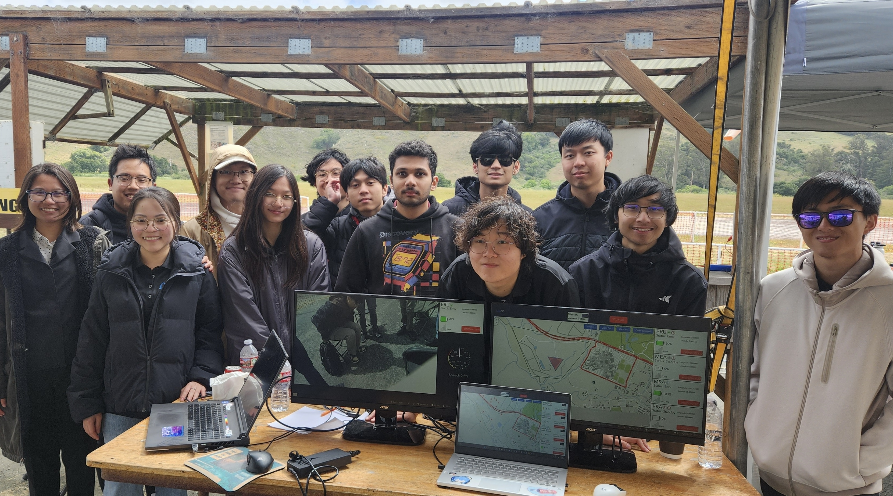
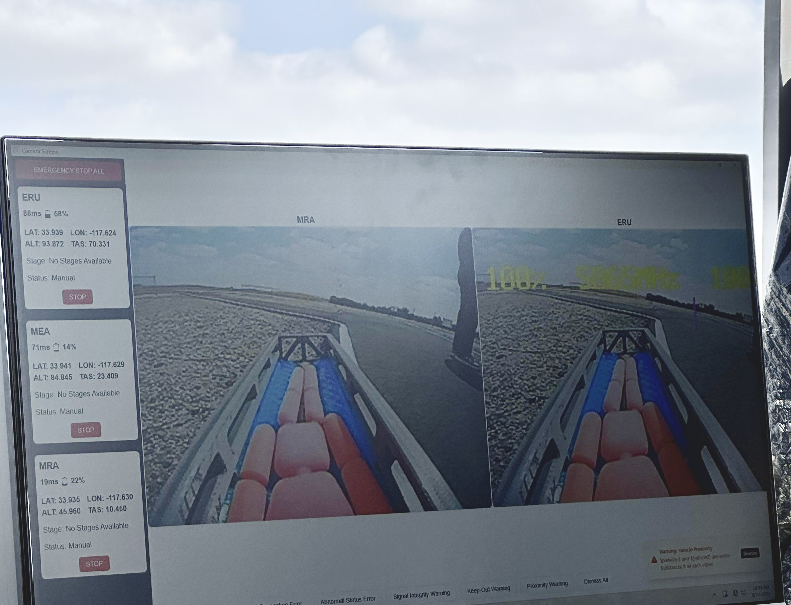
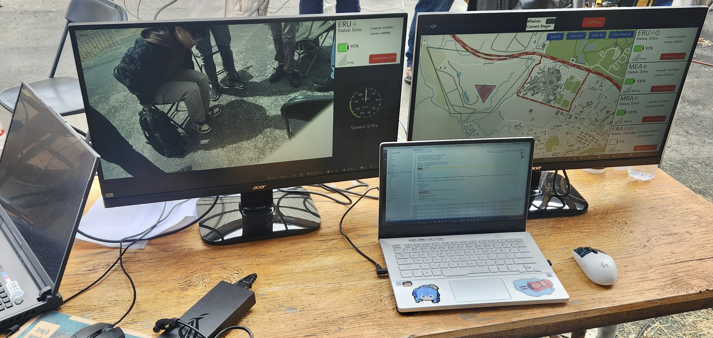
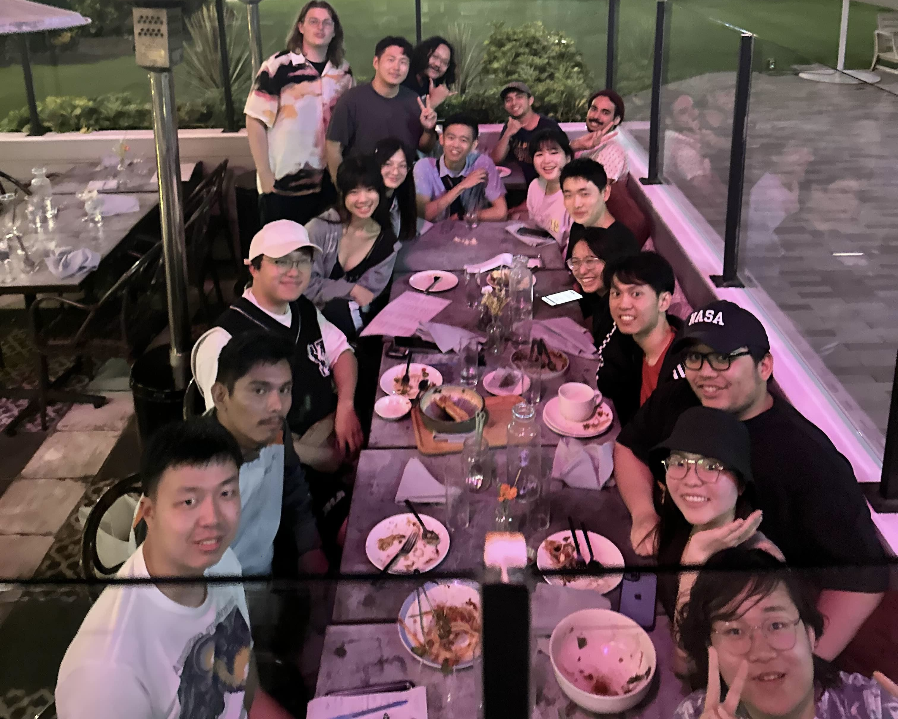

Northrop Grumman Collaboration Project Ground Control System
Skills: TypeScript, Vue, Python, SQL, API development
NGCP Page: CPP NGCP
GitHub Org: NGCP GitHub

Overview
This simulated hiker rescue mission was a joint collaboration between Cal Poly Pomona, Cal Poly San Luis Obispo, and Northrop Grumman. The company provided a Request for Proposal (RFP) outlining mission objectives for unmanned aerial and ground vehicles. As the Frontend Lead for the Ground Control System (GCS), I developed a telemetry dashboard to visualize mission data in real time. After two chief engineers left the project, I also assumed that role, coordinating directly with the project manager and Northrop representatives.
Research
The team had a full turnover with all new members, including myself, so I reached out to previous GCS alumni to ask for any usable legacy code. With the system design team, we analyzed Northrop Grumman's mission requirements to determine derived requirements. Reviewed mapping libraries, real-time data pipelines, and REST API integration methods to ensure low-latency mission tracking.
Goals
- Deliver an interactive dashboard for tracking unmanned vehicle positions, mission stages, and telemetry metrics.
- Bridge communication between frontend, backend, and vehicle teams.
- Recover from delayed project start and meet mission deadlines despite reduced staffing.
Obstacles
- Recruitment challenges due to accepted developers quitting after getting ghosted by the previous chief.
- Our team started significantly behind schedule after recruiting new members and onboarding.
- Need for real-time data accuracy and stability under field test conditions.

Solution
- Recruited and onboarded new GCS developers while establishing a clear project plan and task assignments.
- Implemented telemetry mapping with mission-stage tracking, enabling operators to ping and visualize unmanned vehicle locations across a field.
- Built RESTful endpoints for data exchange and integrated real-time mission data into interactive UI views.
Results
- Helped GCS catch up from a late start to deliver a working system in time for mission demonstrations.
- Successfully presented the GCS dashboard to senior Northrop Grumman engineers, receiving strong positive feedback on functionality and usability.

Reflection
This project brought me both intense stress and immense pride. From reaching out to alumni for legacy code after two PMs left, to watching our map display and being able to ping connected devices in real time, the journey was both exhausting and rewarding. I'm grateful I could continue supporting the project beyond my term and witness the progress made by all software and hardware teams.
